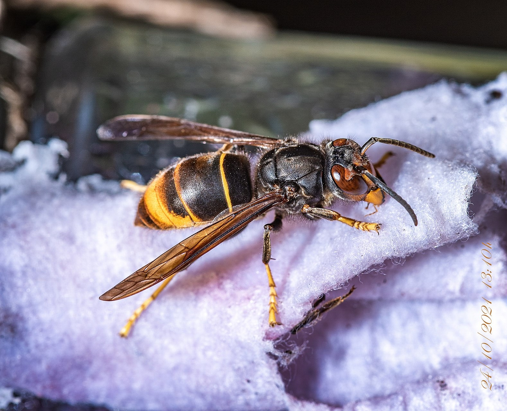
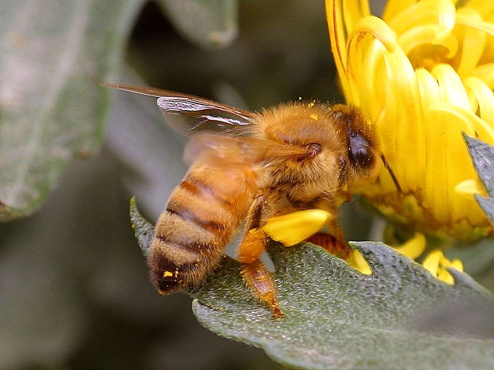
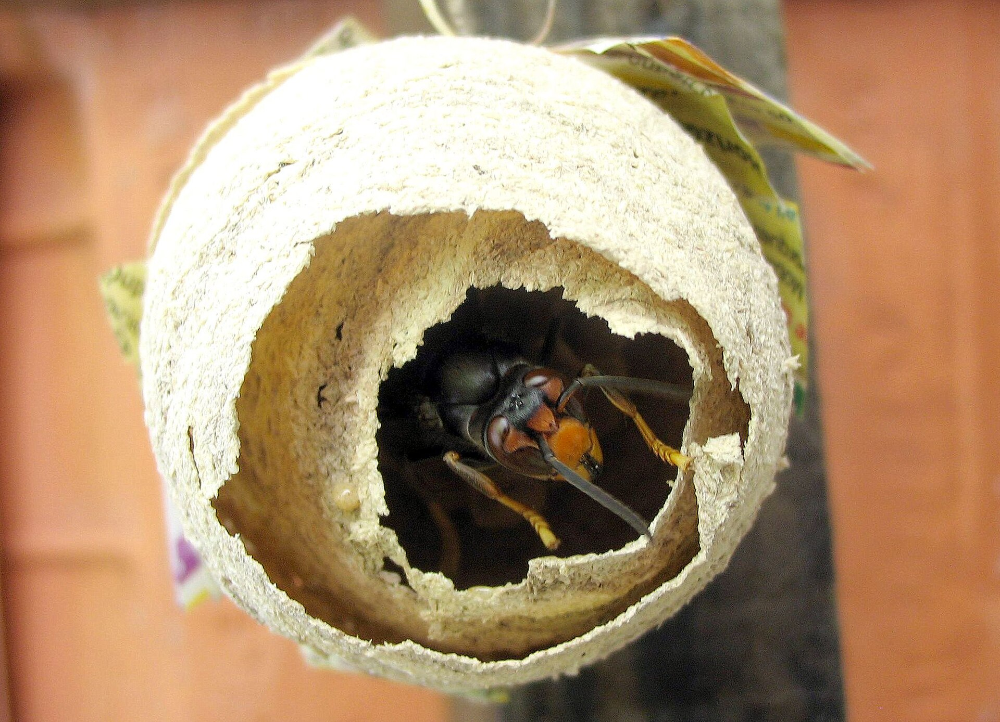
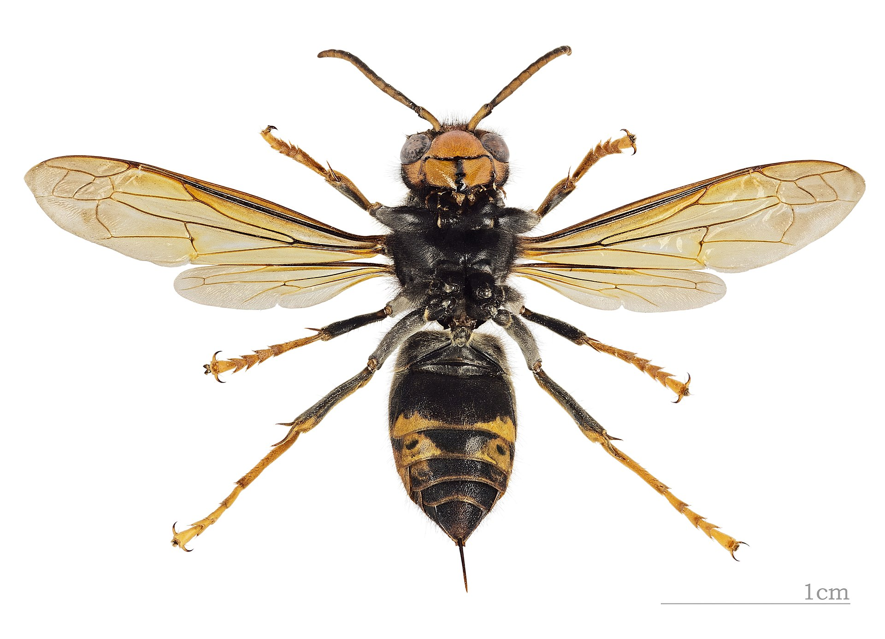
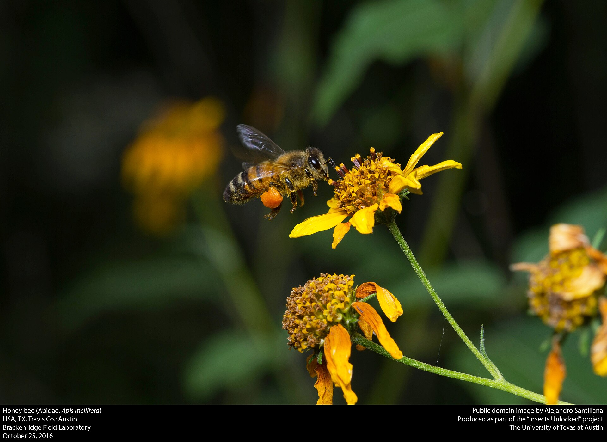

IDENTIFICATION
Compare invasive yellow-legged hornets with other insects and learn to identify them accurately.
Report a Sighting
Compare invasive yellow-legged hornets with other insects and learn to identify them accurately.
Report a Sighting
Yellow-legged hornets (Vespa velutina) are one of the largest invasive hornet species. Key features include:

Confusing hornets with native bees or wasps is common. Differences include:

Yellow-legged hornet nests are usually spherical and made from chewed wood pulp. They are often found:
Hives can be active from spring to autumn. Never try to remove a nest yourself; hornets will aggressively defend it.

Yellow-legged hornets are predatory and territorial. Important points:
Understanding their behavior helps in avoiding conflicts and safely reporting sightings.

To stay safe around yellow-legged hornets:
